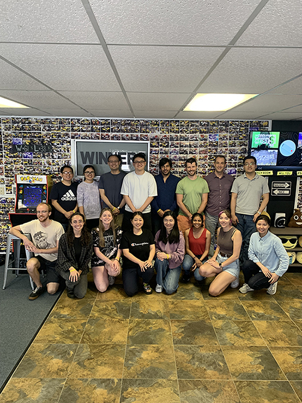
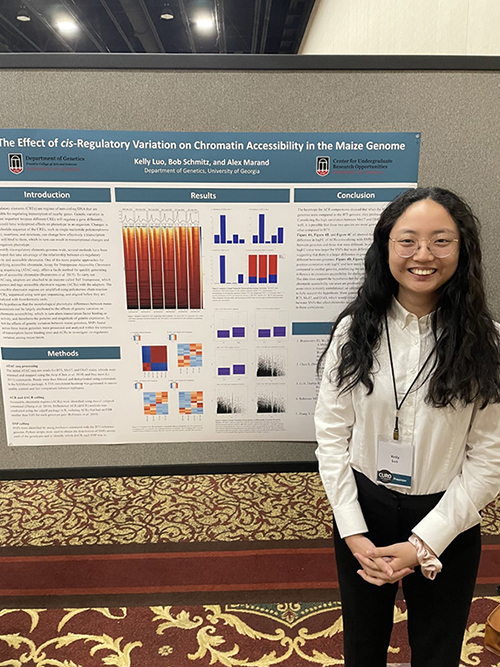
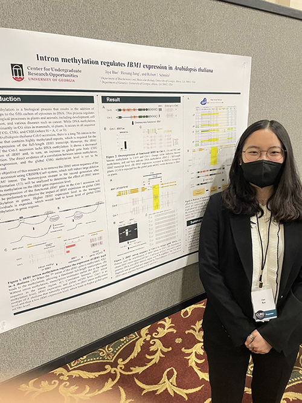
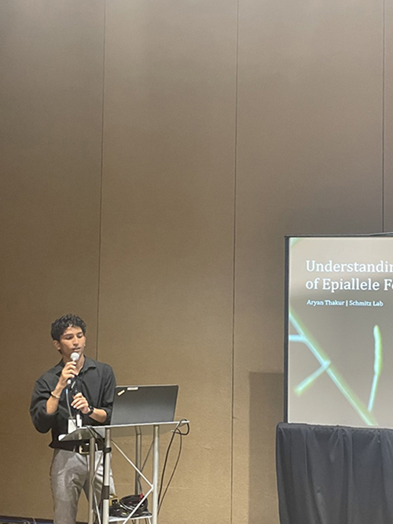

Research Overview
We are interested in determining how phenotypic variation is driven by natural and spontaneous genetic or epigenetic variation. The laboratory focuses on few major research themes.
1) We are interested in the molecular basis and function of spontaneous epialleles. Systematically identifying these epialleles using epigenomic approaches, understanding their patterns of heritability, their interaction with genetic variants and their specific roles in controlling gene expression is necessary for a comprehensive understanding of genome evolution and its effect on phenotypic variation.
2) We are developing a plant evolutionary epigenetic clock to explore how plants respond and migrate in their native environments due to changing climates.
3) We aim to identify the cis-regulatory sequences important for phenotypic variation. We use a combination of molecular genetics, epigenomics and single-cell genomics to identify and functionally test candidate cis-regulatory regions important for crop improvement and natural phenotypic variation.
1) We are interested in the molecular basis and function of spontaneous epialleles. Systematically identifying these epialleles using epigenomic approaches, understanding their patterns of heritability, their interaction with genetic variants and their specific roles in controlling gene expression is necessary for a comprehensive understanding of genome evolution and its effect on phenotypic variation.
2) We are developing a plant evolutionary epigenetic clock to explore how plants respond and migrate in their native environments due to changing climates.
3) We aim to identify the cis-regulatory sequences important for phenotypic variation. We use a combination of molecular genetics, epigenomics and single-cell genomics to identify and functionally test candidate cis-regulatory regions important for crop improvement and natural phenotypic variation.
Epigenetics
The term "epigenetic" was originally defined to convey how an organism of a single genotype can develop from undifferentiated cells: essentially defining a developmental program. This definition requires that gene expression states are heritable through mitotic cell divisions, but there is growing interest in understanding how gene expression states are heritable through meiotic cell divisions. We are using epigenetic approaches to profile diverse plant populations that have been collected over generational time to identify epialleles and to understand mechanisms important for stable transmission of these epiallelic states.
Epigenomics
Epigenomics describes the use of genome-wide assays to describe biochemical activities associated with certain regions of the genome. These assays include the measurement of transcript abundance, DNA methylation or chromatin modification states and chromatin structure as well as many more features of the genome. Developing assays to reveal new activities associated with the genome are important determinants of predicting the output of sequences on phenotypic variation.
News & Updates
Cullan For The Win!
September 08, 2025Big shout-out to Cullan Meyer for taking 1st place in the poster competition at the Genetics Department Retreat 2025! Great job showcasing your research, Cullan! Congrats!
Escape Room Fun!
May 6, 2025The Schmitz Lab took a break from the bench and teamed up for some puzzle-solving fun at our latest outing. 
Alex is a NIH Genetics Training Grant fellow!
April 17, 2025Congratulations to Alex Tadros for being selected as a 2025-26 NIH Genetics Training Grant fellow! Way to go!
Congratulations, Dr. Yao!
April 7, 2025Big Congrats to Nan — now officially Dr. Yao! We're so proud and can't wait to see what's next for you!
Plant Center Retreat 2024 Awardees!
November 4, 2024Congratulations to the Plant Center Retreat 2024 poster winners! Ankush placed 1st in the graduate student section and Ziliang placed 1st in the postdoc/staff section. Nice work!
Hats off to Cullan for winning the NIH training grant two years in a row!
April 5, 2023Cullan Meyer has been selected by the NIH Genetics training grant committee as a recipient of a 2023-2024 training fellowship! Bravo!
2023 CURO Symposium!
April 4, 2023

